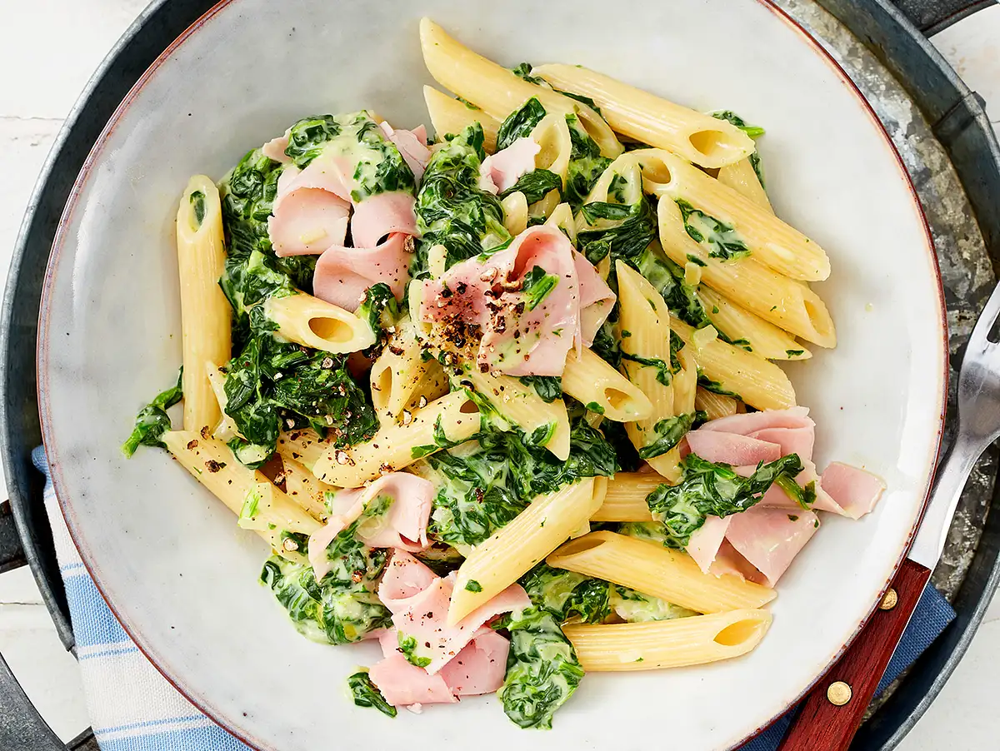

Spinatnudeln mit Schinken
Zutaten
- 300 g Nudeln (z.B. Penne Rigate)
- Salz
- 2 Zwiebeln
- 1 Pck. TK-Rahmspinat
- 200 g Schmelzkäse
- Pfeffer
- 150 g Kochschinken
Zubereitung
- Nudeln in kochendem Salzwasser nach Packungsanweisung zubereiten.
- Zwiebeln schälen und fein würfeln. Öl in einem Topf erhitzen und Zwiebeln darin glasig dünsten.
- Rahm-Spinat zufügen auftauen und kurz aufkochen.
- Schmelzkäse zugeben und einrühren. Mit Salz und Pfeffer abschmecken.
- Schinken in Streifen schneiden. Nudeln abgießen, dabei ca. 100 ml Flüssigkeit auffangen.
- Nudeln und Hälfte Schinken zum Spinat in den Topf geben und miteinander vermengen.
- In Schüsseln anrichten, mit Rest Schinken garnieren und mit etwas grobem Pfeffer bestreuen.

Schnelle spinatnudeln mit schinken.